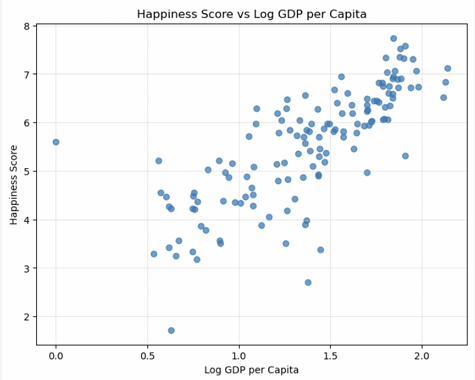

Data Analysis Results
This page explores the relationship between GDP per capita and happiness scores using real-world data.
Results

The scatter plot demonstrates a positive relationship between GDP per capita and happiness score.
Analysis
Countries with higher GDP per capita generally report higher happiness scores. However, wealth alone cannot fully explain well-being because healthcare, freedom, trust, and social support also play important roles.
Comparison Between Countries
| Country | GDP | Happiness |
|---|---|---|
| Finland | High | Very High |
| United States | High | Moderate High |
| India | Lower | Moderate |
| Denmark | High | Very High |